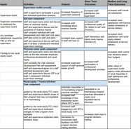

-
Developing logic models and indicators - BFC staff developed a logic model and corresponding indicators to track the short, medium and long-term impact of a pilot program. Read more...
Problem: Over the past 5 years Bread for the City (BFC) has taken steps to foster an anti-racist and trauma-informed organizational culture. As part of this work, BFC has defined racial equity as central to our mission, trained all staff in anti-racism, hired a racial equity manager, organized regular opportunities for staff to learn about structural racism, created an agency-wide trauma-informed care team, and introduced trauma informed care concepts to all staff. Despite this progress, staff at all levels report that they need more guidance to apply racial equity and trauma-informed principles in their daily work.
To address this need, BFC's cross-departmental Trauma Informed Care team created a "supervision toolkit" to help supervisors and their staff identify and implement changes in policies, procedures and behaviors to make their programs more racially equitable and trauma informed. The toolkit includes self care and personal career goals components, since staff members need to feel supported in these areas in order to be able to provide equitable and trauma informed services to clients. With assistance from Measure4Change, BFC's Representative Payee Program is piloting the toolkit in order to assess its impact.
Logic Model:
...
-
Engaging staff in performance measurement - Bread for the City's QI manager developed and rolled out a half-day training on performance measurement for new staff, which has been integrated into the new staff orientation program.
-
Visualizing data - Bread for the City's Data Analyst is taking a General Assembly course to develop skills in web development, which will enable BFC to communicate outcomes online.
-
Gathering real-time client feedback - Bread for the City's medical clinic is gathering real-time patient satisfaction feedback using an a smiley-face survey on an iPad kiosk at patient check-out.
-
Identifying new measurement tools - In early 2020, Bread for the City will survey all staff using the validated onlline ARTIC tool to evaluate our progress toward becoming a more trauma-informed organization.
-
New measurement tools - M4C-supported work measuring staff attitudes toward trauma and trauma informed care led to the identification of ARTIC, a validated tool to demonstrate progress in our evolution toward becoming a more trauma-informed organization. We plan to roll out the ARTIC survey to staff in late 2019.
-
Difficulties finding utility with quantitative data - Because our clients are predominately Black
 , quantitative data on disparities in client outcomes is of limited utility in identifying and addressing racial inequities in BFC's work with clients.
, quantitative data on disparities in client outcomes is of limited utility in identifying and addressing racial inequities in BFC's work with clients.
-
Collection of client satisfaction data - Another approach -- collection and analysis of client survey data on satisfaction dimensions related to quit (working as a team, being treated with respect, trust, BFC staff taking time to answer my questions)--indicated high (90%) baseline levels of client satisfaction. These high baseline satisfaction levels mean we have limited power to detect significant improvements.
-
Identification of power imbalances - With guidance from our M4C team and from the racial equity coach supported by M4C funding, we have moved away from these quantitative approaches come to recognize that racial inequities in BFC's work with clients generally manifest as power imbalances between staff and clients-- specifically missed opportunities to share programmatic decision-making power with clients.
-
Implementing Trauma Informed Care (TIC) - Since 2015, BFC's cross-departmental Trauma Informed Care Committee has made our organization more trauma-informed (for example by training staff how to reframe potentially re-traumatizing language and implementation approaches); however fundamental power differentials between staff and clients remain largely unchanged.
The four examples of Measure4Change's impact on Bread for the City's performance measurement capacity: Use Left/Right Arrow Keys to Scroll: